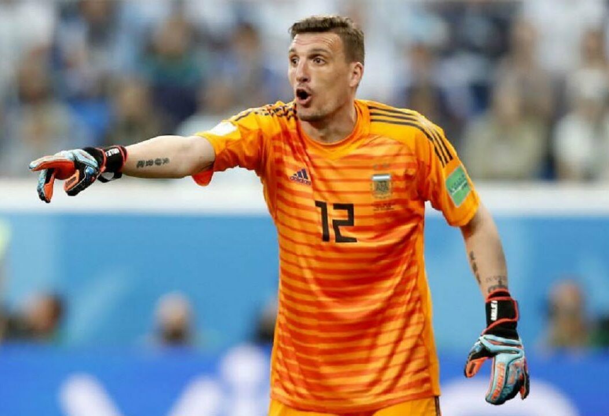

O Armani atualmente joga do River Plate goleiro número 1 e da seleção da Argentina goleiro número 1. Já defendeu pênaltis no River e foi eliminado pela França de 4 a 3 na Fifa World Cup Rússia 2018 por um golaço de Pavard. Na Fifa World Cup Qatar 2022 ficou de reserva mas foi campeão mundial.
